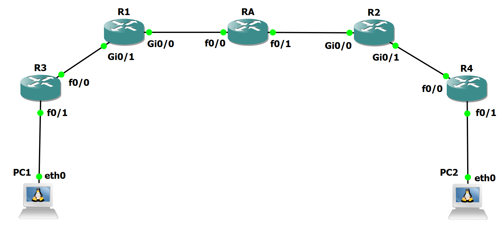
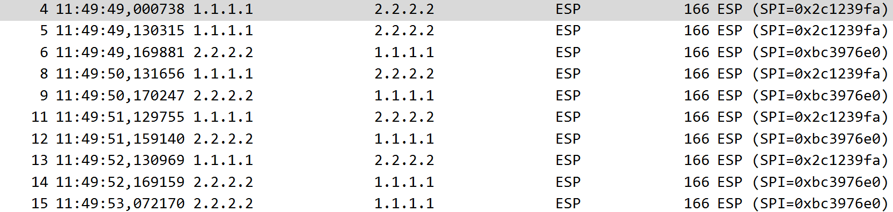

Overview
IPsec Laboratory
IPsec is a widely deployed suite of protocols that provides confidentiality, integrity, authentication, and replay protection for IP communications, enabling secure tunnels over untrusted networks without modifying upper-layer applications.
Its position at the network layer makes it suitable for a variety of scenarios, including enterprise site-to-site VPNs, remote access solutions, and backbone protection mechanisms.
The focus of this laboratory is to understand the configuration of IPsec and observe it in operation with both IKEv1 and IKEv2, examining the differences and evolution between them. We will also analyze its operation using the Authentication Header and the Encapsulating Security Payload.
The experiments will focus on understanding the handshakes of both IKEv1 and IKEv2, their KeepAlive mechanisms, their operational differences, the practical differences between AH and ESP, and how this protocol can operate with digital signatures instead of pre-shared keys.
IKEv1 and IKEv2
IKEv1 was a major step toward automated key management for IPsec, although its design introduced significant complexity and security trade-offs. The protocol is fragmented into Main Mode, Aggressive Mode, and Quick Mode, each serving different purposes in the establishment of the IKE SA and IPsec SAs.
Main Mode provides identity protection but requires six messages, which we can see in Figure 1, marked as Phase 1. Aggressive Mode reduces this to three messages at the cost of identity exposure and weaker security guarantees, while Quick Mode is used to negotiate IPsec SAs under an already established IKE SA.
IKEv2 addresses these shortcomings by consolidating the protocol into a single, well-defined four-message initial exchange composed of two phases: IKE_SA_INIT and IKE_AUTH.
During IKE_SA_INIT, shown in the second half of Figure 1, peers negotiate cryptographic algorithms, exchange nonces, and perform a single Diffie–Hellman key exchange to derive shared secrets. The subsequent IKE_AUTH exchange authenticates both parties and establishes the first IPsec Child SA in a single step, eliminating the need for a separate Quick Mode.

AH and ESP
IPsec consists primarily of two protection mechanisms: the Authentication Header (AH), which is used to authenticate and guarantee the integrity of the messages protected by the IPsec tunnel but does not encrypt them and therefore does not provide confidentiality, and the Encapsulating Security Payload (ESP), which provides both integrity and confidentiality for the messages protected by IPsec, ensuring that they are authentic and cryptographically protected.
Laboratory Topology
The topology of this laboratory consists in:
- Two host devices, labeled PC1 and PC2, which use Alpine Linux.
- Two Cisco 3725 routers, labeled R3 and R4, which are used as gateways for the PCs into the network.
- Two Cisco IOSv, labeled R1 and R2, which are the two endpoints where the IPsec tunnel is established to protect traffic crossing the "Internet".
- One Cisco 7200 router, labeled RA, which is used for routing to simulate a tunnel across the Internet and as a Certificate Authority for one of our experiments.
The topology is visible in Figure 2:

Router Configuration
We will begin the configuration with the two main routers, which are the focus of our laboratory: the routers hosting the IPsec tunnel.
The first device we will configure is R1. We will begin by starting it, opening its console, and waiting for it to be ready for configuration. Once it is ready, first use the command:
This will place the router in configuration mode, ready for us to configure it.
The first set of configurations focuses on setting up the interfaces we will be using:
hostname R1
interface g0/0
ip address 200.1.1.1 255.255.255.0
ip ospf 1 area 0
no shutdown
interface g0/1
ip address 192.168.2.1 255.255.255.0
ip ospf 2 area 0
no shutdown
interface l0
ip address 1.1.1.1 255.255.255.255
ip ospf 1 area 0
Following this configuration, we reach the IPsec section. In this first part, we will set the policy that ISAKMP, the framework that IKE uses to operate, will use:
From this configuration, we can see that we will use AES with a 256-bit key, SHA for the hash, a pre-shared key for authentication, Diffie–Hellman group 5, and a lifetime of 86,400 seconds.
After that, we will configure the PSK, the peer address, the transform set, the IPsec profile that will be used, and the tunnel interface, which will be one of the tunnel endpoints:
crypto isakmp key ipsec address 2.2.2.2
crypto ipsec transform-set myTSet esp-aes esp-sha-hmac
crypto ipsec profile myIPSecProfile
set transform-set myTSet
interface Tunnel0
ip unnumbered g0/1
tunnel source l0
tunnel destination 2.2.2.2
tunnel mode ipsec ipv4
tunnel protection ipsec profile myIPSecProfile
ip ospf 2 area 0
From the configuration, we can observe that the key is "ipsec" and that the peer address is 2.2.2.2. We can see that the transform set, named myTSet, will use ESP, with AES for encryption and SHA for integrity. We can also see that the profile we created, named myIPSecProfile, will use this transform set.
Finally, we create the tunnel interface, Tunnel0, which will use the IP address of g0/1, with the loopback interface as its source and 2.2.2.2 as its peer. It uses IPsec with IPv4 and our myIPSecProfile profile as its security policy, which in turn uses the transform set we configured.
Finally, we add the remaining routing configurations needed for the network to function properly:
With R1 complete, we move on to R2. Follow the same initial steps to prepare it for configuration, and then use the following configuration:
hostname R2
interface g0/0
ip address 200.2.2.2 255.255.255.0
ip ospf 1 area 0
no shutdown
interface g0/1
ip address 192.168.3.2 255.255.255.0
ip ospf 2 area 0
no shutdown
interface l0
ip address 2.2.2.2 255.255.255.255
ip ospf 1 area 0
crypto isakmp policy 10
encryption aes 256
hash sha
authentication pre-share
group 5
lifetime 86400
crypto isakmp key ipsec address 1.1.1.1
crypto ipsec transform-set myTSet esp-aes esp-sha-hmac
crypto ipsec profile myIPSecProfile
set transform-set myTSet
interface Tunnel0
ip unnumbered g0/1
tunnel source l0
tunnel destination 1.1.1.1
tunnel mode ipsec ipv4
tunnel protection ipsec profile myIPSecProfile
ip ospf 2 area 0
router ospf 1
router-id 2.2.2.2
router ospf 2
router-id 22.22.22.22
We can see that both configurations are similar, with changes only to their addresses and peer addresses, as expected.
Now we will configure the remaining routers, which are only used for routing.
RA:
hostname RA
interface f0/0
ip address 200.1.1.10 255.255.255.0
ip ospf 1 area 0
no shutdown
interface f0/1
ip address 200.2.2.10 255.255.255.0
ip ospf 1 area 0
no shutdown
router ospf 1
router-id 10.10.10.10
R3:
hostname R3
no ip domain lookup
interface f0/0
ip address 192.168.2.3 255.255.255.0
no shutdown
interface f0/1
ip address 192.168.1.3 255.255.255.0
no shutdown
ip routing
router ospf 2
network 192.168.1.0 0.0.0.255 area 0
network 192.168.2.0 0.0.0.255 area 0
R4:
hostname R4
no ip domain lookup
interface f0/0
ip address 192.168.3.4 255.255.255.0
no shutdown
interface f0/1
ip address 192.168.4.4 255.255.255.0
no shutdown
ip routing
router ospf 2
network 192.168.3.0 0.0.0.255 area 0
network 192.168.4.0 0.0.0.255 area 0
For routers RA, R3, and R4, we recommend leaving configuration mode with the command exit and then entering the command wr. This will save their current configurations as their startup configurations, removing the need to configure them every time they are turned off.
This is not recommended for R1 and R2, since we will be using several different configurations for our experiments.
Finally, we configure the two PCs.
PC1:
PC2:
With all this done, we can easily test whether this setup is working by opening a Wireshark probe between R1 and RA and performing a ping from PC1 to PC2 using:
We can then observe whether the packets are protected and, instead of appearing as their usual ICMP packets, appear as ESP packets, as we can see in Figure 3:

With all the configurations ready and understood, we can move forward to the Experiments section to learn more about IPsec, IKE, digital signatures and certificates.